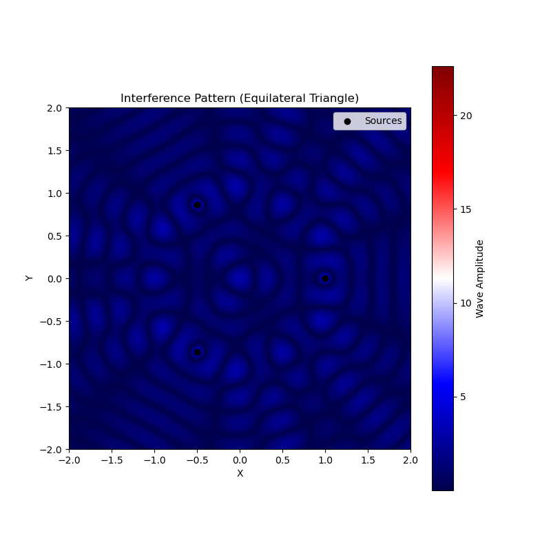
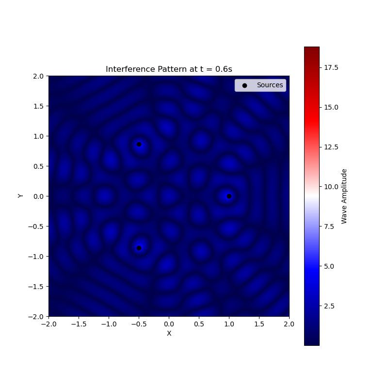

Waves: Interference Patterns from Regular Polygon Sources
Problem Statement
Analyze interference patterns created by wave sources placed at the vertices of a regular polygon on a water surface. The superposition of these circular waves produces distinctive patterns of constructive and destructive interference.

Wave Equation for Single Source
Each point source at vertex position \((x_i, y_i)\) generates a circular wave described by:
where: - \(r_i = \sqrt{(x - x_i)^2 + (y - y_i)^2}\) (distance from source \(i\)) - \(k = \frac{2\pi}{\lambda}\) (wavenumber) - \(\omega = 2\pi f\) (angular frequency) - \(\phi\) = initial phase (same for all sources)
Solution Methodology
4
1. Regular Polygon Configuration
For an N-sided regular polygon with radius \(R\): - Vertex positions: \((x_i, y_i) = (R\cos\theta_i, R\sin\theta_i)\) - \(\theta_i = \frac{2\pi i}{N}\) for \(i = 0,1,...,N-1\)
2. Superposition Principle
Total wave displacement at any point:
Example: Equilateral Triangle (N=3)
Vertex Positions
Characteristic Patterns
- Central Region:
- Symmetric interference
-
Six-fold pattern of maxima/minima
-
Edge Regions:
- Complex interference fringes
- Directional propagation patterns
Visualization Approach
- Spatial Map:
- Plot \(|\eta_{\text{sum}}|\) over a grid
-
Color mapping for wave amplitude
-
Time Evolution:
- Animate wave propagation
- Highlight phase relationships
Key Findings
| Polygon Type | Characteristic Pattern | Notable Features |
|---|---|---|
| Triangle (3) | 6-fold symmetry | Strong central interference |
| Square (4) | 8-lobed pattern | Clear diagonal maxima |
| Pentagon (5) | 10-armed spiral | Rotating interference bands |
Physical Interpretation
- Symmetry Effects:
- N sources → 2N-fold interference symmetry
-
Polygon rotation preserved in pattern
-
Distance Decay:
- \(\frac{1}{\sqrt{r}}\) amplitude decay
- Far-field pattern simplification
Deliverables
- Mathematical Analysis:
- Complete derivation of superposition
-
Phase difference calculations
-
Visualizations:
- Static interference patterns
-
Time evolution animations
-
Discussion:
- Comparison of different polygons
- Real-world water wave analogs